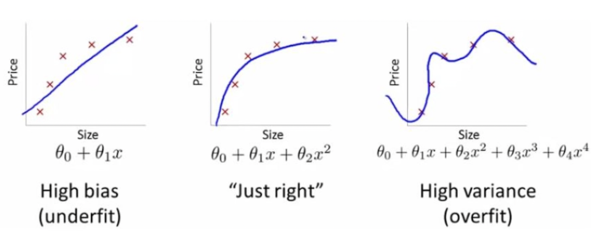
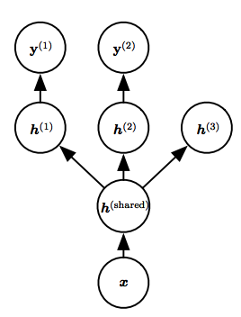
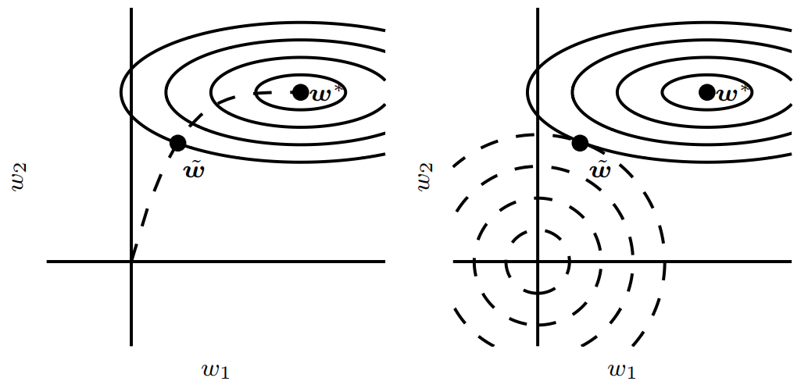
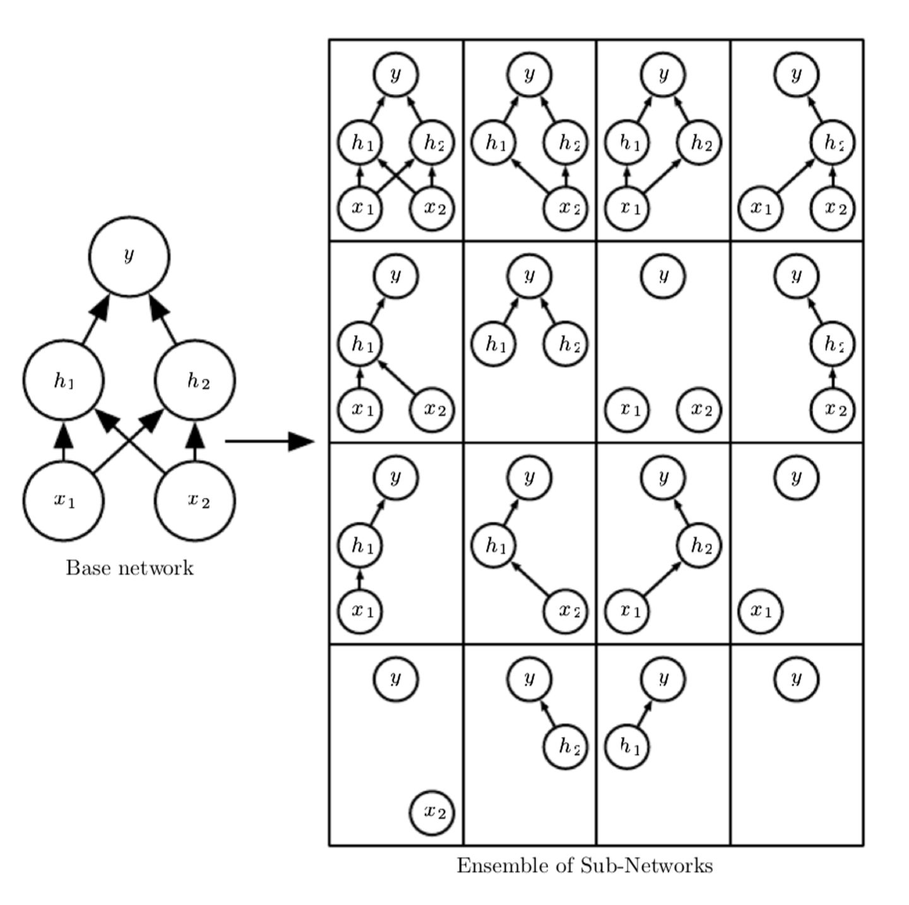
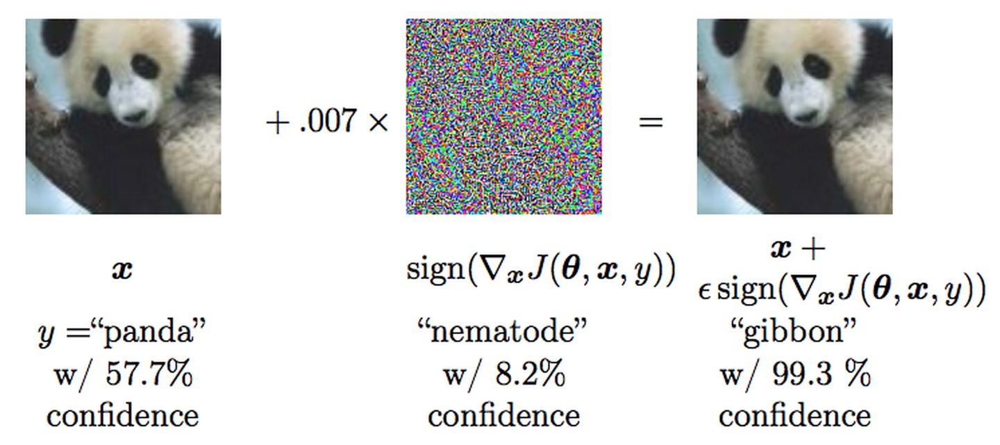

正则化
泛化误差、方差、偏差
只要使用足够复杂的模型，计算机理论上可以拟合任意复杂的数据模式，这种复杂的模型在训练数据集上表现很好，但是在测试数据集上表现通常会很差。所以机器学习的核就心是设计不仅能在训练数据上表现好，而且在测试数据集上也能表现好的模型，即降低训练集上训练误差的同时，还希望泛化误差很低。
如果模型在训练集上不能获得足够低的训练误差，则称之为欠拟合。如果训练误差已经比较低，但是泛化误差很大，则称之为过拟合，直观图示如下：

中间图表示模型正好拟合；左侧图表示模型欠拟合，此时伴随着较高的偏差；右侧图表示模型过拟合，此时伴随着较高的方差。
为了更好的理解拟合效果与偏差、方差之间的关系，我们可以将泛化误差的数学表达式分解如下：
$$E(f;D) = E_{D}[(f(x;D) - y_{D})^{2}] = E_{D}[(f(x;D) - \overline{f}(x))^{2}] + (\overline{f}(x)- y)^{2} + E_{D}[(y - y_{D})^{2}]$$
分解式的第一个式子即方差，它表示了不同的训练数据集训练出的模型输出值之间的差异。
分解式的第二个式子即偏差，它表示所有模型输出的平均值与真实值之间的差异。
分解式的第三个式子即噪声，它表示所有模型所能达到的期望泛化误差下界，刻画了学习问题本身的难度。
即，泛化误差可以表示为为方差、偏差和噪声之和，由于噪声来源于数据本身的不规则扰动，所以通常情况下，上分解式最后一项置0，泛化误差为方差和偏差之和。
所以对于欠拟合的模型，模型并不能很好的刻画真实数据，所有模型输出的平均值与真实值之间都还存在非常大大差异，即有较大的偏差。
对于过拟合的模型，模型输出的平均值与真实值之间差异较小，但是不同训练数据集训练出来的模型输出值差异较大，即较大的方差。
正则化策略
上面有说到，一个好的模型需要泛化误差较低，但是训练模型时经常出现要么偏差过大、要么方差过大的情况，都会导致泛化误差过大。而正则化就是通过有利的“交易”，来显著降低方差而不过度增加偏差的方法。
网络上很多流行的方法认为正则化策略是通过约束和惩罚以趋向于选择简单的模型，以保证不同数据集训练模型的输出方差较小，但实际情况中，一个好的模型不仅仅是合适规模那么简单，毕竟在此时，虽然方差小了，但是偏差也大了。特别是在深度学习场景中，一个适当正则化的大型模型，可能才是泛化误差最小的模型。
正则化策略包含很多，前面所述网络流行的约束和惩罚和惩罚只属其中一种，而且并非所有的约束和惩罚都被设计为偏好简单模型。除此之外，通过数据增强、半监督学习、多任务学习、集成学习、参数共享等方法，也可以达到提高模型泛化能力的目的。
本文将和大家一起探讨正则化的常见策略，探究那些提高模型泛化性能的道与术。
数据增强
提高模型泛化性能最好的办法就是使用更多的数据，让不同训练数据集中的差异足够下，如此模型输出的差异也会很小，达到减小方差的目的。但是实际模型搭建过程中，我们拥有的有效数据通常是有限的（虽然我们都在说数据爆炸，但这其中大多数数据都不能直接使用）。为了解决这个问题，于是有了数据增强方法。
数据集增强
对于一般分类任务而言，分类的目的就是让输入在各种变换过程中保持模式信息不变。对于需要进行密度分布估计的数据来说，该方法具有一定困难性。但是对于当前计算机视觉和NLP领域而言，该方法却是简单且有效的。如在对象识别领域，图像是高维的并且包括各种巨大的变化因素，其中许多可以轻易的模拟。如像素处理、几何变换、颜色变换、旋转反射、噪声注入、内核过滤混合图像、随机擦除、缩放、移动、翻转、剪裁等基于图像技术的数据增强方法，特征空间增强、对抗生成、GAN生成、风格迁移等基于深度学习的数据增强方法。在自然语言处理领域，如同义词词典、随机插入、随机交换、随机删除、语法树结构替换、加噪、情景增强、生成对抗、回译、扩缩句等方法。参考 机器之心-哈工大SCIR：深度学习领域的数据增强
向权重注入噪声
通常情况下，人工设计的数据集增强方法可以大大减小机器学习过程中的泛化误差。除了数据集增强，一些噪声策略可以直接添加到模型权重中。如在循环神经网络中，这被称为关于权重的贝叶斯推断的随机实现。在某些假设条件下，施加于权重的噪声的目的是鼓励学习的函数保持稳定，和更传统的正则化形式相同，它促使找到的点只是极小点、还是平坦区域包围的极小点。这种向输入添加方差极小的噪声的方法一定程度等价于对权重施加参数惩罚。
向输出目标注入噪声
同样，对于输出目标也可以进行噪声输入，这种方法也叫标签平滑，它能防止模型追求确切概率而不影响模型学习正确分类。
范数惩罚
范数
在说L1范数和L2范数前，线整体了解一下范数，范数是一种更广泛的距离的概念，它满足距离定义的三个特性
- 非负
- 自反
- 三角不等式
不过，范数在定义上比距离多了一条数乘的运算法则，一般情况下，范数可以当作距离理解。
在数学中，范数分为向量范数和矩阵范数，简单而言，向量范数表示的是向量空间中向量的大小，矩阵范数表示从一个矩阵到另一个矩阵的变化大小。
所有范数组成了范数族，统一表示为L-P范数，表达式如下：
$$L_{p} = ||W||{p} = (\sum{i = 1}^{n}|w_{i}|^{p})^{1/p}$$
当p=1时为L1范数，当p=2时为L2范数。
L1、L2范数惩罚
L1、L2范数本身其实也可以作为损失函数，不过此处主要介绍其作为正则化惩罚的问题。
通过前面对范数族的理解，显然L1可以表示为各个参数的绝对值之和，即
$$L_{1} = ||W||{1} = \sum{i = 1}^{n}|w_{i}|$$
同理L2范数可以表示为
$$L_{2} = ||W||{2} = (\sum{i = 1}^{n}|w_{i}|^{2})^{1/2}$$
这两个正则化策略都是向目标函数中添加一个正则项
L1和L2分别作为正则项的目标函数表示为
$$J_{1}(w; X, y) = \alpha||w||_{1} + J(w; X, y)$$
$$J_{2}(w; X, y) = \frac{\alpha}{2}w^{T}w + J(w; X, y)$$
对应的梯度就分别变成了
$$\nabla J_{1}(w; X, y) = \alpha w + \nabla_{w} J(w; X, y)$$
$$\nabla J_{2}(w; X, y) = \alpha sign(w) + \nabla_{w} J(w; X, y)$$
（其中：$sign(w)$ 表示简单的取 $w$ 各元素的正负号）
可以看到 L1是在原目标函数上添加可一个常数项，L2是添加了一个线性项。而且L1的形式我们不一定能得到 $Jw; (X, y)$ 二次近似的算术解，而L2是是可以的，而且L2计算起来也会更加方便。
L1相比L2，由于其只表示各元素的正负号，会导致最优值中的很多参数为0，产生更加稀疏的解。基于该特性，L1也常被用于进行特征选择。
半监督学习
半监督学习通过先对输入空间进行具有聚集特性的样本进行相似表示再做分类处理，以提高分类器的泛化性能，比如。
在分类之前，先使用因子分析（主成分分析）对数据进行投影，或对于图结构的一些分类，在实际分类前先对图结构进行嵌入式的图表示（如GraphSage），对表示后的向量再进行分类，或者直接在GraphSage中使用交叉熵进行分类。
多任务学习
多任务学习是通过合并几个任务中的样例来提高泛化性能的一种方法，可以理解为对参数进行了软约束。将模型的一部分为多个额外的任务共享，在一定程度上为单个模型增加了训练样本，而且被共享的部分更有可能被约束到更好的值，以此来提高泛化性能。
示意如下图所示，任务共享相同的输入，但涉及不同目标任务的情况。

该方法因为共享参数，还能提升计算性能。不过，该方法只有某些参数可以共享时候才能发挥好的效果，即某些任务之间存在合理的统计关系假设，否则强制使用会使得模型效果更差。对与常见的学习任务，底层先验知识通常用于解释数据本身的分布变化。
集成学习
集成学习的方法可以参考 好而不同的集成学习 ，集成的方法主要包括平均法、投票法和学习法，训练方法主要有Bagging和Boosting。
Bagging通过分别训练几个不同的模型，然后让所有模型表决样例的输出，以此来提高泛化性能，最常用的模型如随机森林，其本质上就是很多决策树模型的集成来提高单个决策树模型的泛化性能。
神经网络能够找到足够多不同的解，意味着可以从模型平均中收益，正是因为任何机器学习方法都可以从模型平均中受益，这种方法通常不作为科学论文的baseline。不过在机器学习比赛中，用数种乃至数十种模型平均的方法获胜，常常是比较有效的方法。
当然，不是所有的集成都能让集成模型比单一模型更加正则化，例如Boosting就构建了一种比单个模型容量更好的模型。
交叉验证
交叉验证是在机器学习建立模型和验证模型参数时常用的办法，Bagging为有放回采样，而交叉验证可以理解为无放回模型平均，即把得到的样本数据进行切分，组合为不同的训练集和测试集，用训练集来训练模型，用测试集来评估模型预测的好坏。在此基础上可以得到多组不同的训练集和测试集，某次训练集中的某样本在下次可能成为测试集中的样本，即所谓“交叉”。其提高泛化性能的原理与集成学习类似。
常用的交叉验证方法有 参考 交叉验证(Cross Validation)原理小结
- 简单交叉验证：我们随机的将样本数据分为两部分（比如： 70%的训练集，30%的测试集），然后用训练集来训练模型，在测试集上验证模型及参数。
- S折交叉验证（S-Folder Cross Validation）：S折交叉验证会把样本数据随机的分成S份，每次随机的选择S-1份作为训练集，剩下的1份做测试集。
- 留一交叉验证（Leave-one-out Cross Validation）：它是第二种情况的特例，此时S等于样本数N，这样对于N个样本，每次选择N-1个样本来训练数据，留一个样本来验证模型预测的好坏。
- 自助法（bootstrapping）：比如我们有m个样本（m较小），每次在这m个样本中随机采集一个样本，放入训练集，采样完后把样本放回。这样重复采集m次，我们得到m个样本组成的训练集。
稀疏表示
权重衰减可以直接惩罚模型参数，L1正则化会产生更加稀疏的解以达到正则化的目的，还有一种策略是可以惩罚神经网络的激活单元，比如稀疏化激活。也就说，稀疏表示是使得每个神经元的输入单元变得稀疏，很多输入是0。含有隐藏单元的模型本质上都可以变得稀疏。
前面所说的L1惩罚是稀疏表示的一种方法，此外，从表示上的Student-t先验导出的惩罚和KL散度惩罚都可以进行稀疏表示。
早停/提前终止
在不考虑计算性能的条件下，如果不断的提高模型参数，模型理论上可以拟合任意复杂度的数据。但是这种情况经常会导致随着训练时间的推移，训练集误差不断下降的同时，验证集的误差会逐渐增大，特别是在深度学习任务中，该结果在模型训练后期几乎是必定出现。这就意味着只要验证集误差不再下降，训练过程即可终止，返回模型参数。这种方法就叫早停，也叫提前终止，由于其简单和有效，算是深度学习任务中最流行的正则化形式。
通过验证集误差的U型曲线可以确定提前终止这种策略是有效果的。那么提前终止的正则化机制是什么呢？其实通过限制训练步数（时间）可以将参数空间限制在初始值的领域内，在二次误差的简单线性模型和简单的梯度下降情况下，提前终止相当于L2正则化的效果。对比图如下：

上图左侧是提前终止效果，右侧是L2正则化效果。左图虚线是从原点开始的SGD经过的轨迹，右侧虚线圆圈表示L2的轮廓。
提前终止简单易用，不过也会带来一些额外的开销，如训练期间需要定期评估验证集，这也是提前终止最大的代价，其次，还有一个额外代价是每次终止都需要保存参数副本，不过这种偶发的慢写入对训练性能影响不大。
参数共享
参数范数惩罚是正则化参数使其彼此接近的一种方式，而更流行的方法是使用约束强迫某些参数相等。如将各种模型或模型组件共享唯一的一组参数。和正则化参数相比，其显著优点是只需要将参数的子集存储在内存中，这可以显著减少模型占用的内存。最典型的应用就是卷积神经网络（CNN）。
例如，对于猫狗的图片，如果猫狗在图片上的位置发生移动，并不会影响结果的变化，CNN通过在多个图像位置共享参数来考虑该特性，相同权重的隐藏单元在在输入的不同位置上计算获得，这就意味着猫狗出现在图像中的第 $i$ 列还是第 $i + 1$ 列，CNN都可以检测到目标。
参数共享不仅降低了CNN模型都参数数量，还在不增加训练数据的同时显著增加了网络的大小，算是将领域知识整合在网络架构中的最佳范例。
Dropout
Droupout是一种计算计算方便同时又功能强大的一种正则化方法，可以认为是集成大量深层神经网络的Bagging方法。
前面有说到Bagging需要训练和评估多个模型，当每个模型都是一个很大的神经网络时，这意味着非常大的计算开销。而Droupout正好是提供了一种廉价的Bagging近似，能够训练和评估指数级数量的神经网络。子网络集成效果表示如下

和bagging方法相比，bagging中每个模型是完全独立的，而在dropout中，所有模型共享参数，而且模型继承了父网络中的参数的子集，这使得在有限的存储空间中可以表示多个模型，这也是dropout最关键的地方。在Bagging中，每一个模型在相应训练集上训练到收敛，在dropout中，大部分模型都没有被显式地训练，因为父神经网络会很大，其子网络更是一个庞大的集合。相应的方法是训练一些子网络，参数共享的方法会使得剩余的子网络也能有不错的参数设定。
Dropout看似集成复杂，实则计算非常简单，当利用minibatch的算法随机梯度下降算法来训练时，产生n个随机二进制数与状态相乘即可，每个样本每次更新只需要 O(n) 的计算复杂度。
Dropout另一个优点是不怎么受限于模型结构和训练过程，基本上在所有分布式表示且可以用随机梯度下降训练的模型上都可以有很好的效果。
Droupout还有一个优点是来自隐藏单元的掩码噪声，这也是其强大的重要原因，所以Droupout也可以看作是通过噪声相乘构建新输入的过程，而且这个过程可以对输入内容高度智能化、自适应，这相比于传统的噪声注入，基本上不会破坏输入的原始信息。
对抗训练
在独立同分布的数据集上，神经网络的表征能力已经和人不相上下，但是神经网络本质上还是基于数据特征去理解事例的，一些人类观察不到的原始样本于对抗样本之间的差异，网络却可能给出不同的预测。

如上图，在熊猫图片加了一些人眼不可见的干扰，形成新样本，而新的人眼仍可鉴定为熊猫的图片却会被机器以较大置信率鉴定为长臂猿。形成这样的结果主要是由于神经网络中的大部分组成还是线性的(如ReLU可以看成是分段线性)，而对于不同的输入，线性函数会受到较大的扰动，产生较大的改变。
为了解决这一问题，可以将对抗样本重新加到训练集中，使得神经网络倾向于对于数据集保持局部稳定而不至干扰过大，从而学习到更有效的信息，从这个角度上看，对抗样本算是一种输入数据集增强的方法。
reference
《深度学习》，IanGoodfellow、YoshuaBengio、AaronCourville著，-第1版，–人民邮电出版社
完～